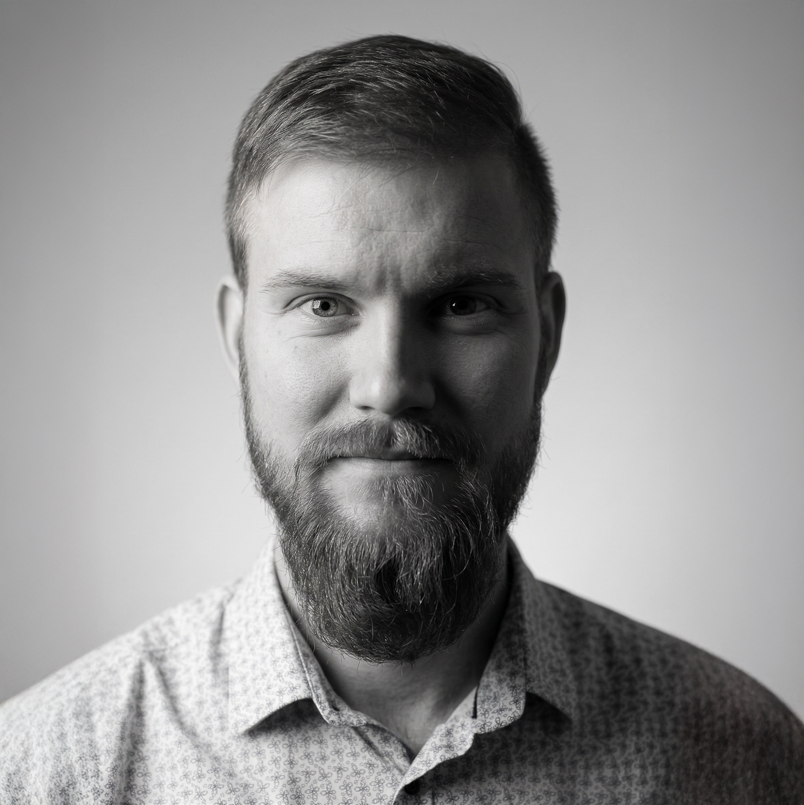

That shift changes how AI learns from project data, how engineering software is marketed, and who leads the next decade. I help AEC companies build the digital presence to get there.

AEC Digital Strategist & Web Lead
I am an independent digital specialist helping AEC companies build powerful web presentations and marketing strategies. Operating from Czechia with a global reach, I actively popularize the implementation of AI across the industry. In my current primary role, I manage the international web ecosystem and marketing efforts for Dlubal Software, driving their global digital footprint.
My work spans from digital strategy to hands-on execution, living at the crossroads of technical knowledge and effective communication in the AEC industry.
I provide freelance web development and marketing services to Dlubal Software, building a web ecosystem that makes structural engineering knowledge accessible, useful, and engaging for a global audience. A long-term engagement that started right after high school and has grown into a full-spectrum digital partnership.
Visit dlubal.com →I work at the intersection of two worlds: structural engineers and software developers. That gives me a practical edge: I understand both sides well enough to bridge them and communicate AI solutions in a language that makes sense to each.
Web-based tools aren't just more convenient. They're how AI learns from real project data at scale. The vendors who understand this today will define the industry in ten years. No local installs, no version conflicts. Just a browser and access to everything your team needs.
I help engineering and marketing teams identify where AI fits their workflow and actually implement it. From prompt strategy to tool selection to internal training. Practical, not theoretical. Starting with the problems your team faces today.
I sit at the intersection of AEC engineering knowledge and content strategy, translating AI capabilities into language that makes sense to structural engineers, project managers, and executives, not just developers.
The core structural engineering, AI, and design platforms I use to deliver results every day.
If you are building something at the intersection of AEC, web ecosystems, and AI, I want to help you scale it. I provide dedicated digital marketing and web development services to global clients, completely independent of time zones. Reach out to start the conversation.